Value learning at intermediate flow states
Rewards evaluate completed actions in the environment, but a flow actor is parameterized by velocity decisions at intermediate flow states. Existing intermediate-value methods obtain supervision from explicitly constructed forward or reverse generation trajectories.
From trajectory-derived targets to local flow-time TD
Flow time does not advance the environment or produce reward. Along an exact flow trajectory, the eventual completed action—and therefore its task return—remains unchanged.
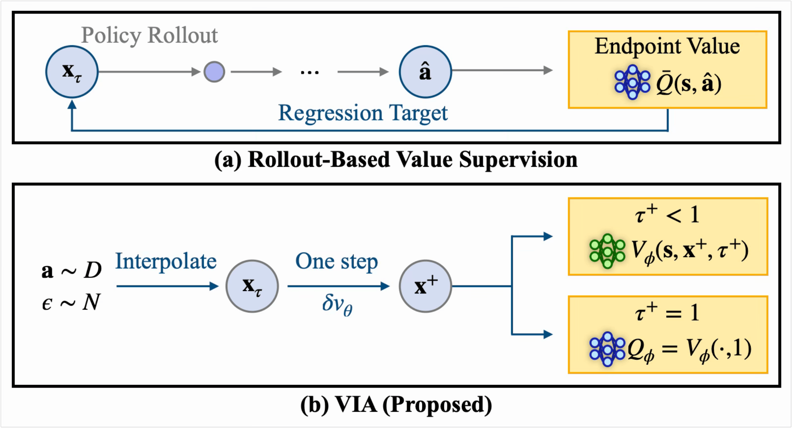
Can flow-time TD replace trajectory-derived intermediate supervision?
Can noise-boundary values replace rollout-based continuation estimates?
Boundary-grounded flow-time TD
VIA couples environment-level Bellman learning at the clean-action boundary with value propagation across flow time in a shared time-conditioned critic.
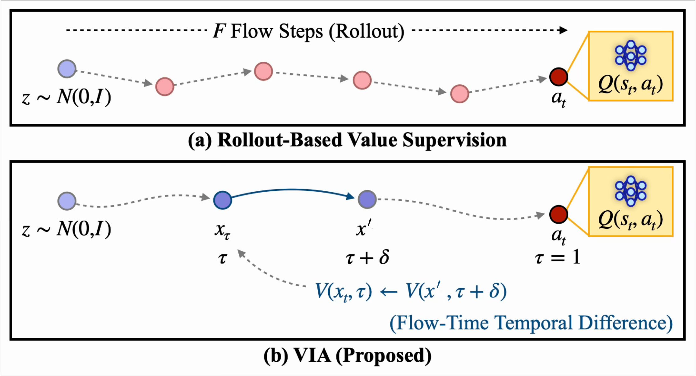
Sample directly
Construct xτ = (1−τ)ε + τa from an offline action and Gaussian noise. No policy integration is required to obtain the regression location.
Take one flow-time step
One velocity evaluation constructs x′ = xτ + δvθ(s,xτ,τ). Randomized δ either bootstraps from a later flow state or reaches the clean boundary.
Ground at the boundary
At τ = 1, Qϕ(s,a)=Vϕ(s,a,1) is trained on dataset Bellman targets, anchoring intermediate value propagation to task returns.
Coupled critic learning
The same time-conditioned critic represents clean-action values, intermediate values, and noise-boundary continuation.
clean Bellman learning at τ = 1 + reward-free value propagation over flow time
Value-guided actor learning
An actor-dependent one-step lookahead supplies value guidance while conditional flow matching regularizes the policy toward the offline action distribution.
one-step value guidance; no sequential actor rollout is constructed
Does local flow-time TD preserve offline RL performance?
VIA is evaluated on 50 OGBench tasks across navigation and manipulation domains, with targeted controls for intermediate supervision and noise-boundary continuation.
50 tasks across navigation and manipulation
We evaluate VIA on OGBench following the protocol of prior work, covering ten domains with five tasks per domain.
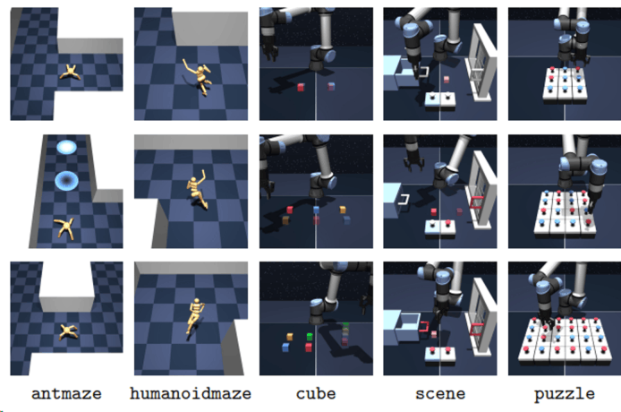
VIA remains competitive with strong intermediate-value baselines while avoiding the forward- or reverse-generation trajectory construction used by Q-Flow and RQL, and performs strongly in several manipulation domains.
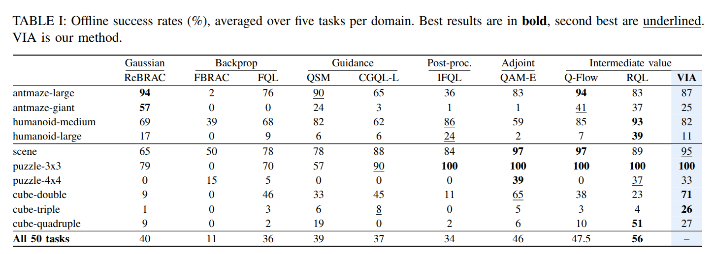
Single-transition flow-time TD attains the highest mean success across the three controlled tasks and consistently outperforms reverse-path and data-endpoint regression.
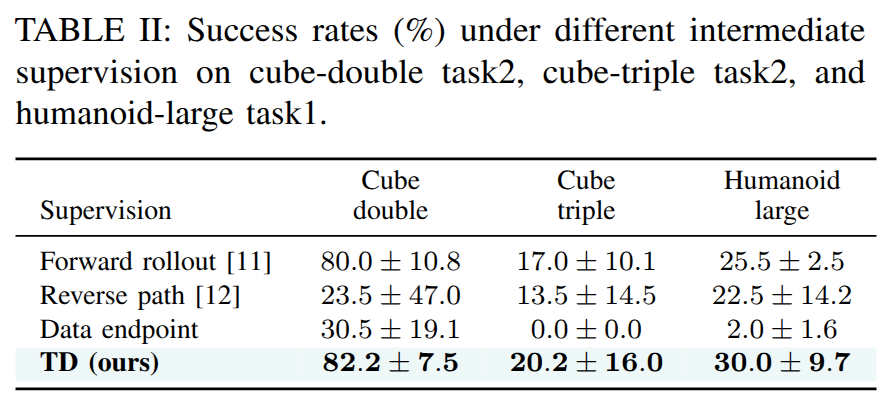
Deployment flexibility and boundary-value behavior
We examine deployment discretization, noise-boundary continuation, hyperparameter sensitivity, critic capacity, and longer environment returns.
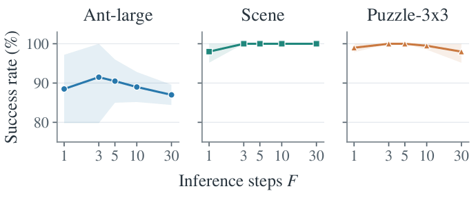
Direct noise-boundary evaluation achieves higher mean success on two of three settings and comparable performance on the remaining setting, with value consistency comparable to rollout-based evaluation.
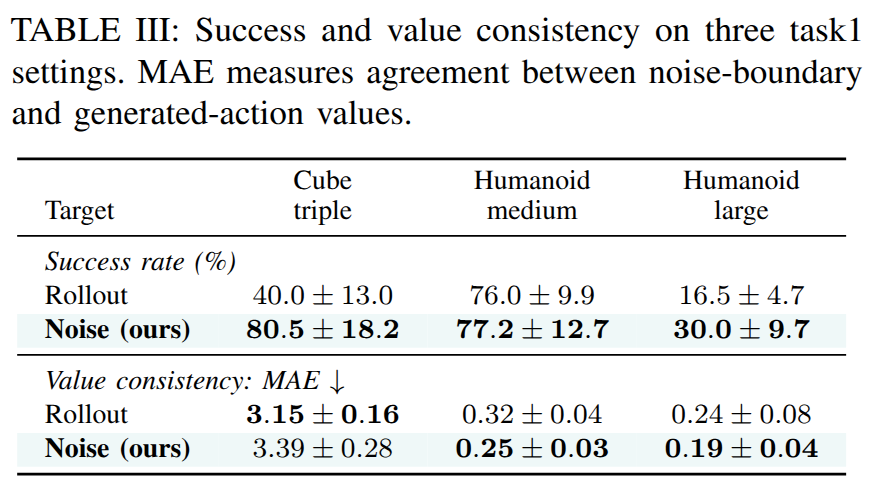
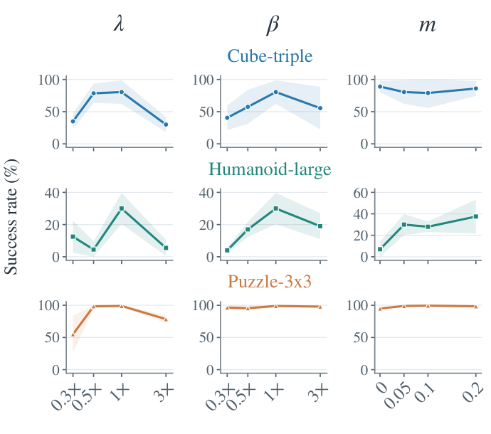
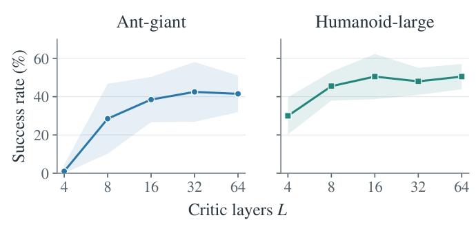
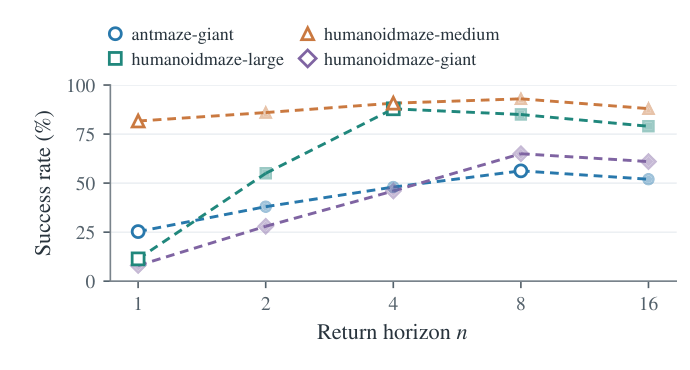
Update the boundary, keep the learning framework
New online transitions can update the clean Bellman boundary while the same flow-time TD recursion propagates the updated information across intermediate flow states. This tests whether an offline-pretrained VIA policy can benefit from interaction without introducing a separate online objective.
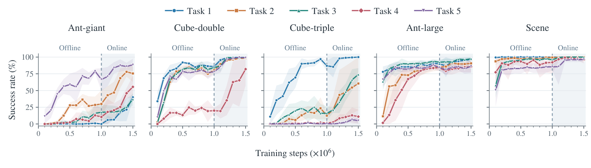